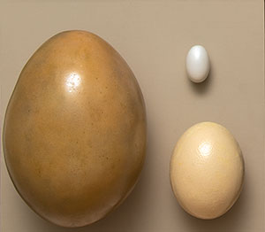
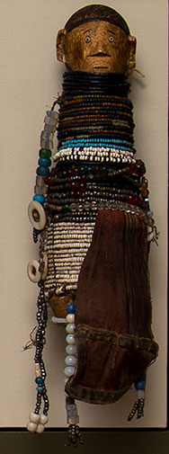
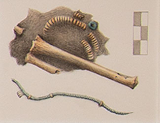
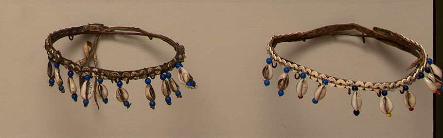
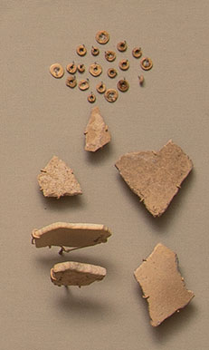

Birds and Beads: Understanding Recent Extinctions in Madagascar
In the last two thousand years several species of giant flightless birds, known as ratites, fell to extinction in Madagascar. These included one of the largest of all birds, the fantastic elephant bird-Aepyornis maximus-that stood more than 10 feet (3 meters) tall! Today researchers studying these extinctions are examining the role that humans might have played in the birds' disappearance. Intensive hunting, human-caused changes in vegetation patterns, the introduction of new pathogens, and climate change have all been cited as potential causes.
In 2011 the Morombe Archaeological Project (MAP), directed by Yale PhD candidate Kristina Guild Douglass, set out to investigate the relationship between humans and ratites on the southwest coast of Madagascar. On the African mainland ostrich eggshell beads are an ancient and enduring form of human expression, where they are important markers of ritual, exchange and wealth. But despite their common occurrences in mainland contexts, no eggshell beads were documented in Madagascar before the work of MAP.
New finds of eggshell beads and other worked pieces of eggshell are shedding light on the complex relationship between humans and the island's extinct giant birds. The analyses will reveal how people were hunting, poaching from and interacting with various species of ratites.

Cast of a Madagascar ratite egg. Species unknown.
Cast of an ostrich egg.
Chicken egg.
Eggshell fragments recovered by MAP are being analyzed with a combination of techniques-aDNA analysis, mass spectrometry and scanning electron microscopy-to answer questions about species diversity, palaeoenvironment and human predation.

An African doll, possibly a ritual object, adorned with glass and ostrich eggshell beads.
YPM ANT 200768
Ostrich eggshell beads appear in many ritual and funerary contexts throughout Africa, suggesting they were objects of great value. Through MAP survey and excavation, worked ratite eggshell-including eggshell beads-has been collected in Madagascar for analysis and comparison with worked ostrich eggshell from the African mainland to help in the interpretation of these unique finds.

Artist's interpretation in watercolor of a strand of ostrich eggshell beads (YPM ANT 265154) from a Nubian funerary context.

East African headdresses adorned with ostrich eggshell beads.
YPM ANT 201091, ANT 235569
Eggshell beads were used as objects of adornment. Archaeologists working in African contexts distinguish ostrich eggshell bead-making traditions on the basis of the method of manufacture and the overall shape and size of the beads. Different communities expressed their distinctive aesthetics through their bead manufacture choices.

Top: Loose ostrich eggshell beads showing variation in eggshell thickness.
Bottom: Madagascar ratite eggshell fragments showing variation in thickness. Courtesy of the MAP 2011 Survey Collection
YPM ANT 265284
For Madagascar ratites, significant variation in eggshell thickness might be an indication of a difference in species. The thickness of Madagascar ratite eggshells generally varies between 1 and 4.5 mm, whereas that of an ostrich is around 1.5 mm. MAP is testing whether thickness measurements can reliably be used to distinguish species of Madagascar and African ratites. In the case of New Zealand's extinct moa, this method was unsuccessful, but Madagascar's ratites showed a greater variation in size than the known species of moa, so researchers are hopeful.